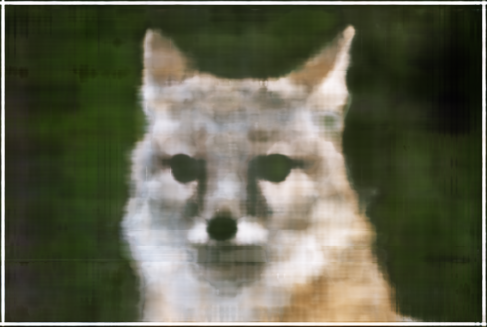

CS180 Final Project: NeRFs
Warmup: Fitting a Neural Field to a 2D Image
Much of the conceptual content of NeRFs can be applied to a 2D image, which is in fact easier than actually modeling the 3d scene.
Here we basically train a neural network to fit a continuous function which models a single 2d image
(it takes in a normalized pixel coordinate and outputs a color).
We don't have to worry about radiance, or rendering problems, or anything like that.
Here is the image we are trying to fit:
 In this project, we represent the continuous function using a neural network. Following the suggestions,
we use a simple MLP with 4 layers, 128 hidden units per layer, and ReLU activations. The final activation function is a sigmoid,
which is convenient because the input pixel values are normalized to the range [0, 1]. The loss function is the mean squared error between the predicted and actual image,
and the optimizer is Adam with a learning rate of 0.01, run for a total of 2000 gradient steps with a batch size of 16384.
Here are the results of fitting a neural field, from 400 to 2000 gradient steps:
In this project, we represent the continuous function using a neural network. Following the suggestions,
we use a simple MLP with 4 layers, 128 hidden units per layer, and ReLU activations. The final activation function is a sigmoid,
which is convenient because the input pixel values are normalized to the range [0, 1]. The loss function is the mean squared error between the predicted and actual image,
and the optimizer is Adam with a learning rate of 0.01, run for a total of 2000 gradient steps with a batch size of 16384.
Here are the results of fitting a neural field, from 400 to 2000 gradient steps:
Here is a plot of the PSNR over the course of training (unfortunately, I didn't realize that PSNR was so important before I collected these graphs, so the values are simply multiplied by -10 / ln(10), i.e, about -4.34):
As you can see, the neural field is able to fit the image pretty well, even with only 400 gradient steps.
The 2000-step model is a little better, but not by much.
There is a little trick needed to get the model to fit high-frequency details of the image well.
The input pixel coordinates are embedded into a higher-dimensional space before passing through the layers of the neural field.
In particular, the embedding is a fixed sinusoidal embedding, which is a common trick for this kind of problem.
We can see the importance of this embedding by looking at what happens if we reduce the number of dimensions in the embedding.
Above we had 10 frequency components in the embedding, but below we have only 3:
The model fits pretty well at low frequencies, but the high-frequency details are lost.
Also, here is an example of what happens if the model doesn't have enough representation power to fit the image (the width of the layers was decreased by a factor of 4):


Part 2: Actually Fitting a NeRF to a 3D Scene
In this part of the project, we fit a NeRF to a toy dataset of 100 200x200x3 images of a Lego tractor.
The objective is to fit a function which takes in a 3D point and viewing angle, and outputs a color and "density", or opacity.
Neural Radiance Fields and the Volume Rendering Equation
In this model, light does not bend, and always travels in straight lines. However, some objects are partially transparent,
and objects may appear to be of different colors from different angles (although we don't model light reflection directly,
this allows our model to capture some of the effects of light reflection).
Our model of these interactions is captured by the volume rendering equation. From a specific viewpoint, a point (or a pixel in an image)
will be colored by light passing through the ray behind that point, and its color will be some combination of the colors of all of the light in that ray.
Objects which are nearer to the camera will block light from objects which are farther away, in proportion to their opacity as well as the thickness of the object in the viewing direction.
The natural result of this is that a given ray of light has a exponential decay in intensity as it passes through the scene.
This is all summed up by the volume rendering equation, which is a simple integral over the ray behind a point.
As mentioned in the project description, we will actually sample points along the ray, compute a discrete approximation of the integral,
and then use a neural network to fit the function at those points:
This is a clever way of producing a loss signal for a neural network,
so that it can model a 3d radiance field given only 2d images.
Cameras, Rays, and Point Sampling
Since the dataset comes with camera intrinsics and extrinsics, we can straightforwardly compute the rays passing through each pixel.
Following the project description suggestions, we sample 64 points along the ray, spaced evenly along the range from 2 to 6
distance units (whatever units the calibration was using) from the camera, with some added noise so that the points are not in the exact same place every time.
Different sampling strategies are possible, but in our case we sample uniformly from all of the pixels from all of the images,
and then take all of the points from each of the corresponding rays.
Here is what 100 rays, projected from a single image, look like:
And here is what 100 rays, sampled from all of the images, look like:
In reality we sample rays something like 8192-16384 at a time, but that would be too messy to visualize.
Model Architecture and Training
Also following the project description, we use a simple MLP with some skip connections, as well as the positional encoding trick we described earlier.
The architecture is pretty self-explanatory:
The loss function is the mean squared error between the predicted and actual color and density at the sampled points,
and the optimizer is Adam with an inital learning rate of 5e-4 and exponential learning rate decay with gamma = 0.999, run for a total of 10000 gradient steps with a batch size of 16384.
I unfortunately wrote a function so that it computed all of the loss data and then didn't save any of it while I trained my model, so unfortunately I don't have graphs of the loss.
(I did save the results for the coarse-to-fine sampling model, which I hope is sufficient for credit on the project.) The model achieves a PSNR of 23 in about 3000 gradient steps, and caps out at just over 24.
However, I did save the model, and you can see the results of rendering it from a collection of test angles (not found in either the training or validation sets) below (open in a new tab to see it play):
Extra thing: Coarse-to-Fine Sampling
One of the major problems with the setup described above is that most of the samples are wasted, because the part of space occupying the sampled points is empty.
The original paper has a trick for dealing with this, which we reproduce: we use two models to do the sampling, one coarse and one fine.
The coarse model is basically the same as the model described above. It is trained to predict the density and color of a point from a given angle.
However, the density predictions are used to sample points to be passed to the fine model, using the same model of light we had for volume rendering:
Points are sampled in proportion to the amount of light from that point which is able to make it to the camera, according to the density predictions of the coarse model.
(Doing this in a discrete way involves doing some inverse transform sampling, so it looks complicated, but this is the core idea.)
This sampling isn't differentiable, but the result is that points given to the fine model are much likelier to be found near surfaces which are actually worth modeling.
The net result isn't too much stronger, but it allows us to train the model much faster: this model achieves a PSNR of 23 in about 1200 gradient steps,
though the batch size is a quarter of the size of the previous model (since it takes about three times as much memory to do this, especially since we sample more points with the fine model).
Here are some graphs of the training and evaluation loss and the PSNR of the training process with the coarse-to-fine sampling model:
Here is a video of the model rendering the scene from a collection of test angles (open in a new tab to see it play):